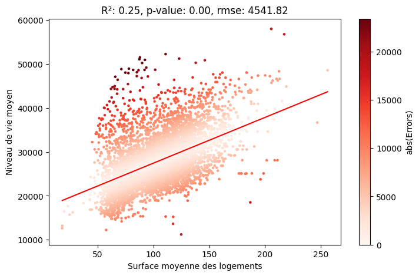
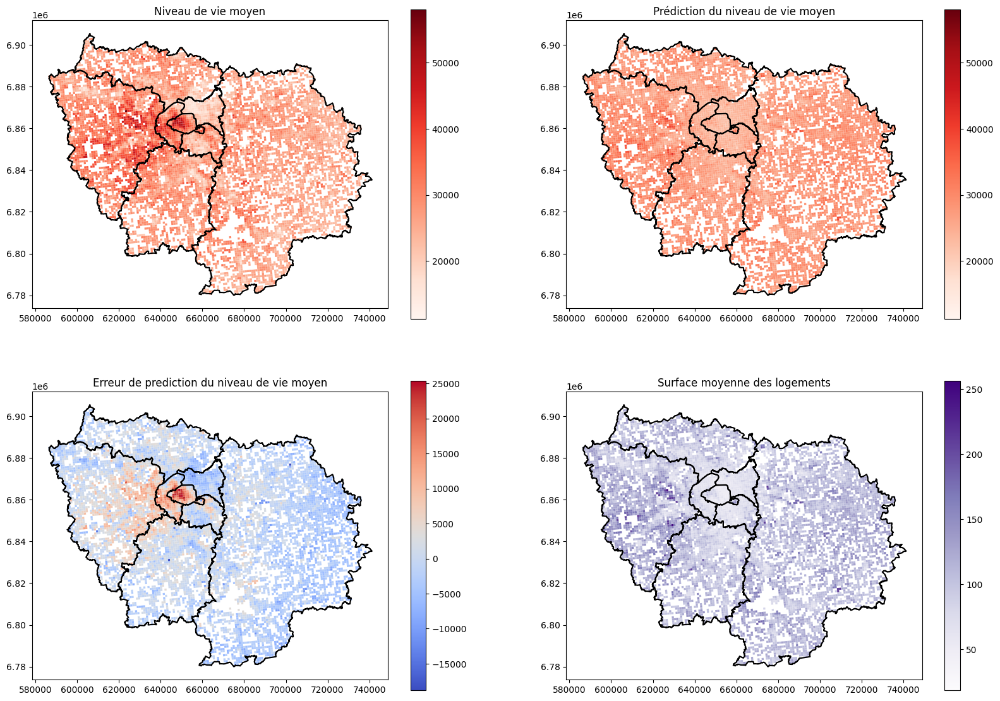
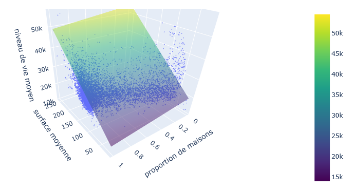
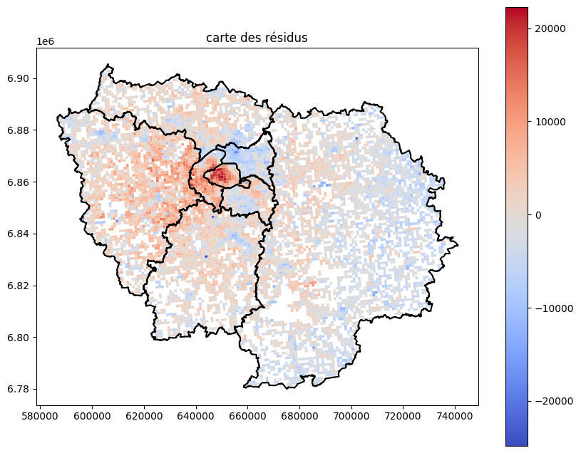
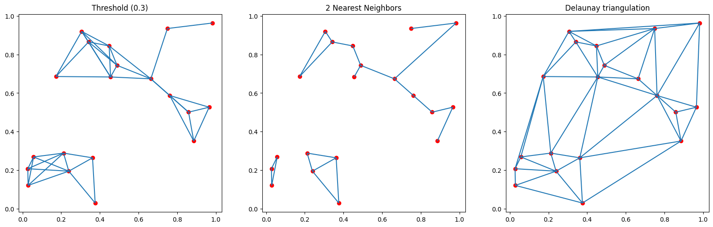
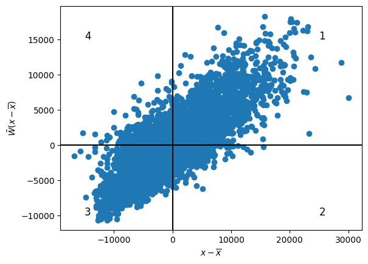
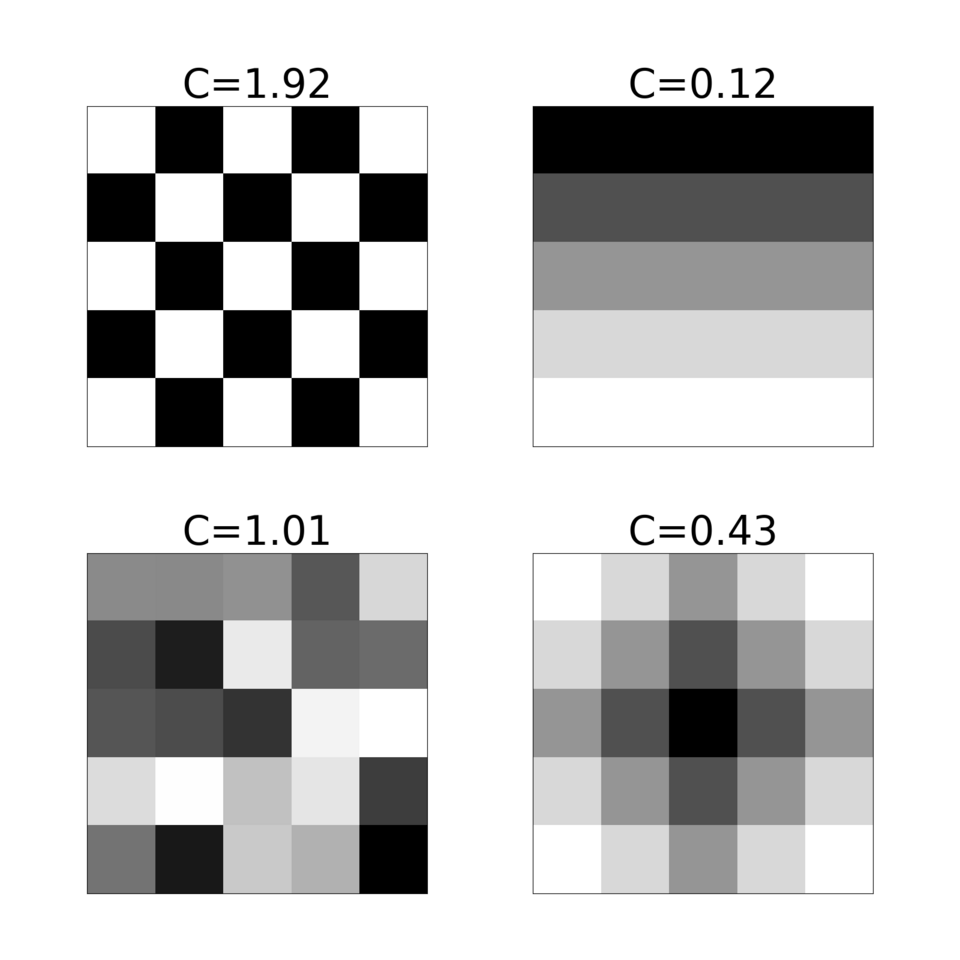
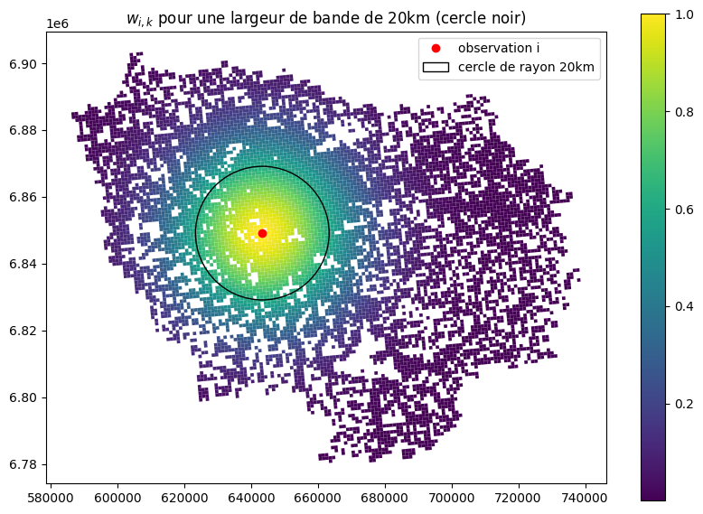
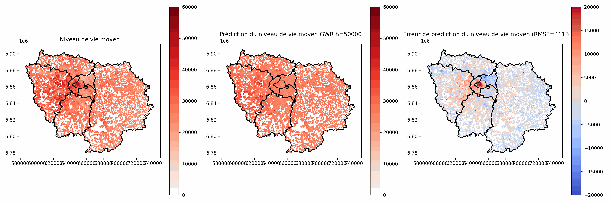
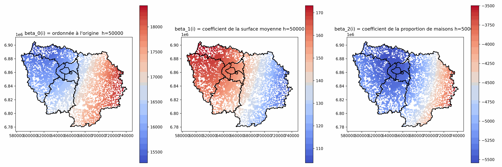

Analyse Multivariée : régression multivariée
M1 Géomatique - M2 IGAST
Martin Cubaud
LASTIG-UGE-IGN/Géodata Paris
2025-2026
Plan du cours
Cours construit à partir de ceux de Paul Chapron, Marie Chavent et Bouayad Agha Salima
- Introduction et rappels
- Régression linéaire multiple
- Cartographie des résidus et auto-corrélation spatiale
- Régression Pondérée Géographiquement (GWR)
Introduction et rappels
Analyse multivariée - principes
Analyse multivariée = les données sont multidimensionnelles.
| gid | nom | Code insee | Alt_moy | Pente_moy | De_relig | ... |
|---|---|---|---|---|---|---|
| 1 | RENCUREL | 38333 | 1114 | 74 | 0,02893089 | |
| 2 | MALLEVAL-EN-VERCORS | 38216 | 1114 | 74 | 0,07057872 | |
| 3 | MURIANETTE | 38271 | 1027 | 73 | 0 | |
| 4 | CHAMP-SUR-DRAC | 38071 | 215 | 2 | 0,4742854 | |
| 5 | JARRIE | 38200 | 385$X_{ij}$ | 46 | 0,22279623 | |
| 6 | AUTRANS | 38021 | 1305 | 42 | 0,02277919 | |
| 7 | MONTCHABOUD | 38252 | 518 | 71 | 0,50559645 | |
| 8 | PONT-EN-ROYANS | 38319 | 409 | 43 | 0 |
Classification : Quelles sont les communes (individus) qui se ressemblent ?Analyse factorielle : Quelles sont les variables qui ont des comportements similaires ou opposés ?
Analyse Multi-Variée - Principes
A chaque individu (unité spatiale), on associe son vecteur $X_i$, contenant la $i^{ème}$ ligne :
$X_i = (X_{i,1} ... X_{i,M})$
A chaque variable, on associe son vecteur $V_j$, contenant la $j^{ème}$ colonne :
$V_j = \begin{pmatrix}X_{1,j}\\...\\X_{N,j}\end{pmatrix} \rightarrow$ Moyenne, écart-type, variance
Rappels : régression linéaire
Statistiques inférentielles
On veut prédire la variable $V_2$ à partir d'une variable explicative $V_1$.
Le modèle est : $\hat{V}_2 = a \times V_1 + b$, où $a$ et $b$ sont les paramètres ou coefficients du modèle.
a et b sont obtenus par moindres carrés.
Rappels : régression linéaire
$R^2=cor(V_1, V_2)^2=cor(\hat{V}_2, V_2)^2$ $\rightarrow$ est-ce que le modèle prédit bien les observations ?
$R^2$ $\rightarrow$ Quelle pourcentage de la variabilité de $V_2$ est expliquée par celle de $V_1$ ?
Significativité : p-value $\rightarrow$ probabilité d'obtenir un $R^2$ au moins aussi fort si les 2 variables étaient indépendantes.
On note les résidus $\epsilon$ : $\epsilon_i = V_{2, i} - \hat{V}_{2, i}$.
Erreur quadratique moyenne $MSE=\frac{1}{n}\sum_{i=1}^n \epsilon_i^2$, $RMSE = \sqrt{MSE}$
Exemple
On veut prédire le niveau de vie moyen par carreaux de 1 km à partir de la surface moyenne des logements :

- snv_moy_pred = 104 * surf_moy + 17044
- R² = 0.25 : niveau de vie élevé corrélé à grandes surfaces, mais variabilité pour une surface donnée.
- p-value très faible $\rightarrow$ significatif
Exemple

Régression linéaire multiple
Régression linéaire multiple
Objectifs de la régression linéaire multiple :
- On souhaite prédire une variable quantitative $Y$ à partir de m variables explicatives.
- On suppose une relation linéaire entre $Y$ et les variables explicatives.
- S'il y a des liens plus complexes, on peut créer de nouvelles variables $\rightarrow$ par exemple transformation non-linéaire d'une variable, produit de plusieurs variables
- ⚠ Aucune variable explicative ne doit être une combinaison linéaire d'autres variables explicatives.
Modèle de la régression linéaire multiple
$Y_i = \beta_0 + \beta_1 X_{i,1} + \dots + \beta_m X_{i,m} + \epsilon_i = \beta_0 + \sum_{j=1}^m \beta_j X_{i,j} + \epsilon_i$
Ecriture matricielle :
$Y = \tilde{X} \beta + \epsilon$
Avec $Y = \begin{pmatrix} Y_1 \\ \dots \\ Y_n \end{pmatrix}$, $\tilde{X}= \begin{pmatrix} 1 & X_{1,1} & \dots & X_{1,m} \\ \dots & \dots & \dots & \dots \\ 1 & X_{n,1} & \dots & X_{n,m} \end{pmatrix}$, $\beta = \begin{pmatrix} \beta_0 \\ \dots \\ \beta_m \end{pmatrix}$, $\epsilon = \begin{pmatrix} \epsilon_1 \\ \dots \\ \epsilon_n \end{pmatrix}$ vecteur des résidus
Méthode des moindres carrés
On veut trouver les valeurs de $\beta$ qui minimisent les résidus $\epsilon$.
En particulier, on veut minimiser la somme des carrés des résidus :
$\phi(\beta) = \sum_{i=1}^n \epsilon_i^2 = \epsilon^T \epsilon$
Méthode des moindres carrés
$\phi(\beta) = (Y-\tilde{X}\beta)^T(Y-\tilde{X}\beta) = Y^TY -2Y^T\tilde{X}\beta +\beta^T\tilde{X}^T\tilde{X}\beta$
On veut trouver $\hat{\beta}$ tel que $\frac{d\phi}{d\beta}(\hat{\beta})=\vec{0}$
$\frac{d\phi}{d\beta} = 2\tilde{X}^T(\tilde{X}\beta - Y) =0 \Leftrightarrow \tilde{X}^TY = \tilde{X}^T\tilde{X}\beta$
Si la matrice $\tilde{X}^T\tilde{X}$ est inversible, alors $\hat{\beta} = (\tilde{X}^T\tilde{X})^{-1}\tilde{X}^TY$ minimise les résidus.
La même formule marche pour la régression linéaire simple.
$\hat{Y} = \tilde{X}\hat{\beta}$
Interprétation des $\beta_j$
Les coefficients sont ceux de l'hyperplan qui passe au mieux dans les données.
Chaque $\beta_j$ indique comment évolue Y en fonction de la variable j toutes choses égales par ailleurs, c'est à dire si les autres variables sont fixées.

Résultats avec statsmodels
import statsmodels.api as sm
X = sm.add_constant(gdf[explicative_vars])
y = gdf[target]
#Ordinary Least Square
model = sm.OLS(y, X)
results = model.fit()
print(results.summary()) OLS Regression Results
==============================================================================
Dep. Variable: snv_moy R-squared: 0.295
Model: OLS Adj. R-squared: 0.295
Method: Least Squares F-statistic: 1727.
Date: Thu, 12 Feb 2026 Prob (F-statistic): 0.00
Time: 15:38:32 Log-Likelihood: -81103.
No. Observations: 8267 AIC: 1.622e+05
Df Residuals: 8264 BIC: 1.622e+05
Df Model: 2
Covariance Type: nonrobust
==============================================================================
coef std err t P>|t| [0.025 0.975]
------------------------------------------------------------------------------
const 1.669e+04 207.718 80.334 0.000 1.63e+04 1.71e+04
surf_moy 147.9457 2.737 54.049 0.000 142.580 153.311
prop_mais -5385.5465 239.789 -22.460 0.000 -5855.594 -4915.500
==============================================================================
Omnibus: 702.389 Durbin-Watson: 0.777
Prob(Omnibus): 0.000 Jarque-Bera (JB): 1606.003
Skew: 0.530 Prob(JB): 0.00
Kurtosis: 4.881 Cond. No. 539.
==============================================================================
Notes:
[1] Standard Errors assume that the covariance matrix of the errors is correctly specified.
Résultats avec statsmodels
R-squaredLe $R^2$Adj. R-squaredLe $R^2$ ajusté du fait qu'il augmente "automatiquement" en augmentant le nombre de variables $R^2 = 1 - \frac{(1-R^2)(n-1)}{n-m-1}$Prob (F-statistic)La probabilité que tous les $\beta_j$=0.
coefLa valeur de $\beta_j$std errL'écart-type de l'estimation de $\beta_j$P>|t|La probabilité que ce $\beta_j$=0[0.025 0.975]L'intervale de confiance de $\beta_j$
Des indicateurs sur la normalité des résidus $\rightarrow$ ici il est très confiant sur le fait que les résisus ne suivent pas une loi normale (ce qui a un impact sur la validité des intervales de confiance).
Recommandations
Toujours commencer par cartographier les variables, et par afficher des scatter plots entre chaque variable explicative et la variable expliquée.
Effectuer des transformations des variables si le lien est non linéaire.
⚠La régression par moindres carrés est très sensible aux données abbérantes !!! Mais elle permet parfois aussi de les identifier, c'est souvent ceux qui ont une grande valeur de résidu (si l'erreur de mesure n'est pas sur toutes les variables).
Cartographie des résidus et auto-corrélation spatiale
Pourquoi s'intéresser à la spatialité ?
Première loi de la géographie :
"Tout intéragit avec tout, mais les objets proches ont plus de relations que les objets éloignés"
[Tobler, 1970]
En particulier, les résidus de régressions ont souvent une structure spatiale, qui vient des différences de celles des variables explicatives et expliquée.
Cartographie des résidus
import statsmodels.api as sm
X = sm.add_constant(df[explicative_vars])
y = gdf[target]
model = sm.OLS(y, X)#Ordinary Least Square
results = model.fit()
ax = gdf.plot(column=results.resid, cmap="coolwarm", legend=True)#On choisit une colormap divergente
departements_idf.boundary.plot(ax=ax, color="black")
ax.set_title("carte des résidus")
Auto-corrélation spatiale
Principe : à quel point les valeurs d'une variable pour une unité spatiale donnée ressemblent aux valeurs dans les unités spatiales voisines ?
Peut s'appliquer à n'importe quelle variable, pas seulement les résidus.
Notion de voisinage : on va le représenter sous la forme d'une matrice $W$.
Pour toutes unités spatiales i et j, $W_{i,j}$=1 si i et j sont voisins, 0 sinon.
Choix du voisinage
Les mesures d'auto-corrélation spatiale sont sensible à ce choix, toujours comparer des variables avec les mêmes unités spatiales et la même définition du voisinage.
Analyser les résultats selon plusieurs choix est souvent intéressant aussi.
Pour des points :
- Tous les points à moins d'une distance seuil
- Les k points les plus proches
- Triangulation de Delaunay
Pour des polygones :
- Polygones adjacents
- Méthodes pour points appliquées au centroïde des polygones (⚠ si polygone non convexe)
Choix du voisinage - comparaison

Connexité ? Différences de nombre de voisins ? De distances aux voisins ?
Globalement, plus de voisins tends à faire diminuer les valeurs des indices d'auto-corrélation.
Choix du voisinage - Python (pas idéal en complexité)
Points à moins d'une distance seuil :
distances = gdf.geometry.apply(lambda geom: gdf.geometry.distance(geom)
W = (distances < threshold).astype(int)
W = W - np.eye(len(W))#la diagonale ne doit pas contenir des 1
k points les plus proches :
W = (distances.rank(axis=0) <= k+1).astype(int)
W = W - np.eye(len(W))Polygones adjacents
W = gdf.geometry.apply(lambda geom: gdf.geometry.touches(geom)).astype(int)Diagramme de Moran
Pour une variable $x$, en notant $x_c = x - \bar{x}$ et $\tilde{W}$ la matrice $W$ normalisée par ligne.
$(\tilde{W} x_c)_i = \frac{\sum_{j=1}^n w_{i,j} {x_c}_i}{\sum_{j=1}^n w_{i,j}}$ est la moyenne de $x_c$ dans les unités voisines.
On va tracer le nuage de point de $\tilde{W} x_c$ en fonction de $x_c$.
Diagramme de Moran

- Quadrant 1 (et 3) : x a des valeurs similaires pour i et pour ses voisins, supérieures (resp. infér.) à la moyenne $\rightarrow$ auto-corrélation positive
- Quadrant 2 et 4 : x a des valeurs différentes pour i et pour ses voisins, le voisinage ne ressemble pas à i $\rightarrow$ auto-corrélation négative
Indice I de Moran
$I = \frac{n}{\sum_i \sum_j w_{i,j}} \frac{\sum_i \sum_j w_{i,j}(x_i -\bar{x})(x_j -\bar{x}) }{\sum_i (x_i -\bar{x})^2}$
$I=1$ $\rightarrow$ auto-corrélation spatiale parfaite
$I=-1$ $\rightarrow$ dispersion parfaite
$I=0$ $\rightarrow$ structure spatiale aléatoire
Associé à une p-value qui permet de rejeter (ou non) l'hypothèse d'absence d'auto-corrélation spatiale.
Indice I de Moran

Source : wikipedia
Indice C de Geary
$C = \frac{n-1}{2\sum_i \sum_j w_{i,j}} \frac{\sum_i \sum_j w_{i,j}(x_i - x_j)^2 }{\sum_i (x_i -\bar{x})^2}$
$C = 0$ $\rightarrow$ auto-corrélation spatiale parfaite
$C > 1$ $\rightarrow$ dispersion
$C = 1$ $\rightarrow$ structure spatiale aléatoire
Associé à une p-value qui permet de rejeter (ou non) l'hypothèse d'absence d'auto-corrélation spatiale.
Le C de Geary est considéré moins robuste que le I de Moran, mais donne une information plus locale.
Indice C de Geary

Source : wikipedia
Cartographier la dépendance locale
Local Indicators of Spatial Association (LISA)
I de Moran local $I_i = \frac{n (x_i - \bar{x})}{\sum_j (x_j - \bar{x} )^2 } \sum_j w_{i,j} (x_j - \bar{x})$
$I=\frac{\sum_i I_i}{\sum_{i,j}w_{i,j}}$
C de Geary local $C_i = \frac{(n-1)}{\sum_j (x_j - \bar{x} )^2 } \sum_j w_{i,j} (x_i - x_j)^2$
$C=\frac{\sum_i C_i}{2\sum_{i,j}w_{i,j}}$
Régression géographiquement pondérée (GWR)
Régression géographiquement pondérée - Principe
Utilisation conseillée que si les résidus sont géographiquement dépendants.
Dans ce modèle, les coefficients de chaque variable explicative vont dépendre de la position.
On va les estimer localement les coefficients en donnant plus d'importance au observations proches et moins aux observations lointaines.
Régression géographiquement pondérée - Formule
$y_i = \beta_0(i) + \sum_{j=1}^m \beta_j(i) \times X_{i,j} + \epsilon_i$
Les coefficients $\beta$ dépendents de i
On estime le vecteur $\beta(i)$ par $\hat{\beta}(i) = (\tilde{X}^TW_i\tilde{X})^{-1}\tilde{X}^TW_iy$
Où $W_i$ est une matrice de taille $[n \times n]$ qui exprime l'importance à donner à chaque observation pour estimer $\beta(i)$, en fonction de leur distance à l'observation i.
Pour rappel, $\tilde{X}$ est la matrice X avec une colonne de 1 au début.
Il y a une matrice $W_i$ différente pour chaque observation $i$.
Calcul de $W_i$
⚠ C'est une matrice différente de celle utilisée pour l'auto-corrélation spatiale.
$W_i = \begin{pmatrix} w_{i,1} & 0 & \dots & 0 \\ 0 & w_{i,2} & \dots & 0\\ \dots & \dots & \dots & \dots\\ 0 & 0 & \dots & w_{i, n} \end{pmatrix}$, $w_{i,k}$ porte la dépendance spatiale locale.
$w_{i,k} = K(\frac{d(i, k)}{h})$, avec $d(i, k)$ la distance (spatiale) entre les 2 observations, h la largeur de bande et K une fonction noyau (kernel), par exemple $K(x)=e^{-0.5x^2}$
Calcul de $W_i$

On choisit h en fonction de l'échelle du phénomène et de son hétérogénéité spatiale $\rightarrow$ distance d'influence.
Choix de h
h petit :
- Phénomène très local
- Faibles capacités de généralisation
- Sensible au bruit
- Risque d'instabilité de l'inversion de $\tilde{X}^TW_i\tilde{X}$
h grand :
- Phénomène moins local, tend vers la régression non pondérée géographiquement
- Plus facile à interpréter
- Moins bonnes prédictions (résidus plus grands)
Choix à la main ou choix automatique (ex: minimisation des résidus sur un jeu d'évaluation, Akaike Information Criterion (AIC) [Akaike, 1973])
Si la densité des observations varie beaucoup, on peut utiliser une bande adaptative (h varie en fonction de la distance des plus proches voisins de i)
Choix de h

Analyse des coefficients $\beta_j(i)$
Intéressant de cartographier les valeurs de $\beta_j(i)$
Plusieurs comportements locaux différents
Relations locales plus ou moins fortes et avec des sens qui peuvent varier
à comparer aux coefficients de la régression globale
⚠ Peut ne pas avoir beaucoup de sens quand h est petit : valeurs très élevées, grande variabilité...
Analyse des coefficients $\beta_j(i)$
